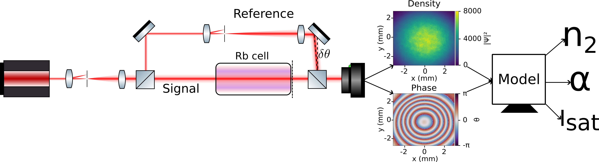
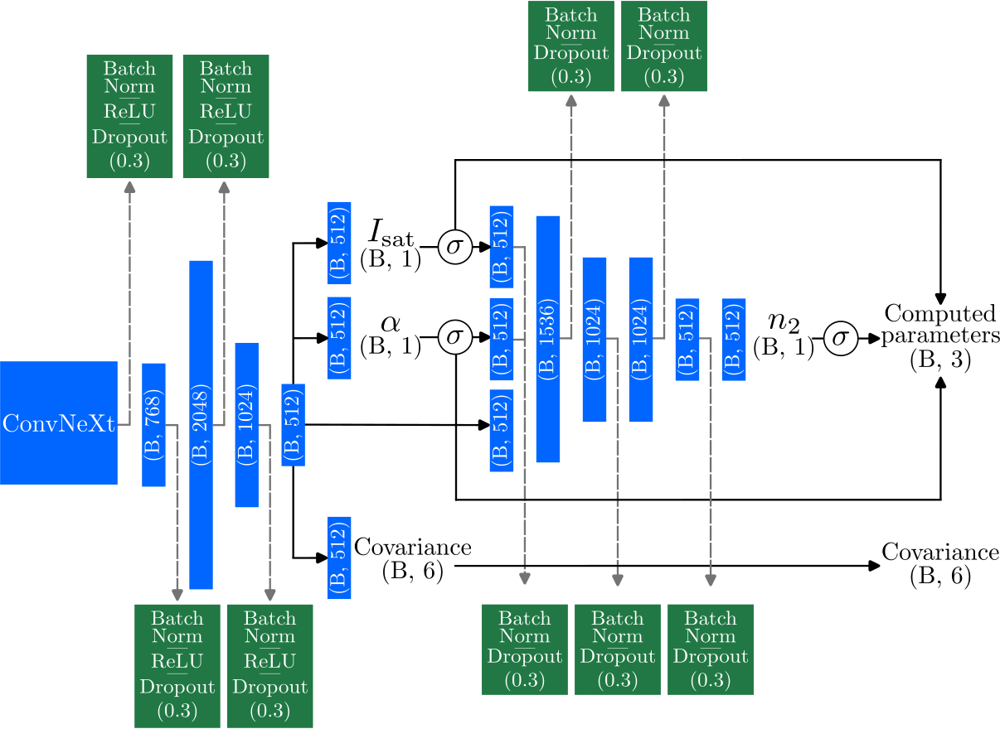

Physical System and Problem
- The Non-linear Schrödinger Equation (NLSE) describes complex wave phenomena in nonlinear optical media and quantum gases.
- We consider a quantum fluid of light, realized experimentally using hot atomic vapors, as a testbed.
- Paraxial and slowly varying envelope approximations simplify the NLSE to model laser beam propagation: \[ \frac{\partial \mathcal{E}}{\partial z} = \left(- \frac{1}{2k_0}\nabla^2_\perp - k_0 n_2 c \epsilon_0 |\mathcal{E}|^2 - i \alpha\right) \mathcal{E} \]
- Intrinsic parameters crucial for characterizing the medium:
- Nonlinear coefficient \( n_2 \): Determines the strength of the medium's nonlinear response.
- Saturation intensity \( I_{\text{sat}} \): Defines the intensity threshold at which nonlinear response saturates.
- Absorption coefficient \( \alpha \): Quantifies linear attenuation of the wave in the medium.
- Off-axis interferometry experimentally provides single-shot density and phase images, capturing the full electric field profile needed for parameter estimation.
- Parameters \( n_2, I_{\text{sat}}, \alpha \) are highly correlated and challenging to measure directly, motivating advanced computational methods, such as machine learning.

Experimental setup with off-axis interferometer to retrive the density and the phase profiles.
NLSE Simulation Data Generation
- Data generated with the NLSE Python library using pseudo-spectral schemes and GPU acceleration.
- Generated 125,000 realistic density and phase image pairs.
- Incorporated realistic experimental noise (Poisson and Gaussian).
Dataset Parameters:
We use a $780$ $\text{nm}$ laser with input power $P = 2.1$ $\text{W}$ and waist $w = 1.7 \cdot 10^{-3}$ $\text{m}$ through a $20 \cdot 10^{-2}$ $\text{m}$ cell. The intrinsic variables have ranges:
- $n_2 \in \left[-1 \cdot 10 ^{-9}; -1 \cdot 10 ^{-10}\right]$ $\text{m}^2/\text{W}$
- $I_{\text{sat}} \in \left[5 \cdot 10^4 ; 1 \cdot 10^6 \right]$ $\text{W}/\text{m}^2$
- $\alpha \in \left[1.3 \cdot 10^1 ; 3.0 \cdot 10^1\right]$ $\text{m}^{-1}$

Density and Phase profiles that the model will train on by combining them as 2 channels of the same image for each triplet of parameters.
Machine Learning Model
- ConvNeXt CNN architecture with conditional regression network.
- Loss function: Multivariate Gaussian Negative Log-Likelihood: \[ L = \frac{1}{2}(\mathbf{x}-\mu)^T\Sigma^{-1}(\mathbf{x}-\mu)+\frac{1}{2}\log|\Sigma|+\frac{d}{2}\log(2\pi) \]
- Training using Adam-W optimizer, batch normalization, and dropout regularization.

ConvNeXt architecture with conditional regression network
Results
- Mean absolute error: 3.22% (\(R^2 = 97.7\%\))
- Parameter-specific errors:
- \(n_2\): MAE = 0.0428
- \(I_{sat}\): MAE = 0.0287
- \(\alpha\): MAE = 0.0251
- Robust results, promising for real-world integration.
- Future work includes improved noise modeling and experimental validation.

Regression analysis comparing predicted vs. actual parameter values